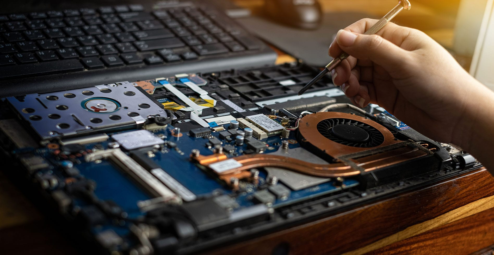

¿Porqué deberías cambiar a un SSD?
A medida que nos volvemos más y más dependientes de nuestra computadora, almacenan más y más información. Para prevenir perdida de esta información es necesario asegurarse de que esté almacenada en un disco duro o dispositivo de almacenamiento en el que podemos confiar.
¿Que es un SSD?
Un SSD, o Solid State Drive (disco de estado sólido) es un tipo de disco duro que no tiene partes móviles. Similar a un pendrive, es un conjunto de chips y circuitos que reemplazan los discos giratorios de un disco duro tradicional.
¿Cómo te puede beneficiar mejorar a un SSD?
Un SSD trae grandes ventajas:
-
Son rapidos y eficientes:
La marca característica de un SSD es su eficiencia, puede acceder a cada objeto que almacena de forma ínstantanea, un resultado de la forma en la que operan. Esto significa que tienen una velocidad mucho mayor cuando se enciende el sistema, se descarga o accede a información.
-
Son confiables:
Al tener menos piezas móviles, tienen una mayor duración. Se estiman alrededor de 50GB de uso por día durante 12 años antes de que un SSD se desgaste.
-
Son asequibles:
En el mercado actual se pueden encontrar SSDs relativamente baratos.
¿Quién debería cambiar a un SSD?
Se recomienda a cualquiera con una computadora que siga usando un disco duro tradicional. Si bien la instalación es sencilla (Acá dejamos un gran vídeo de como hacerlo), se puede dejar en una tienda de reparación de confianza para hacer la instalación.